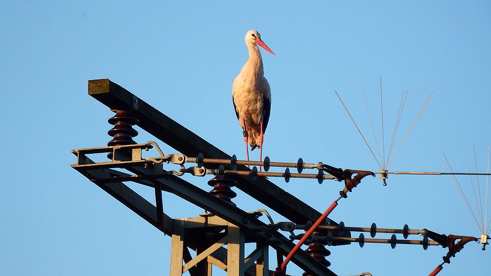

Engineering analysis and mitigation strategies to reduce bird perching
risks on high-tension transmission and distribution insulator assemblies

Bird perching on HT transmission insulator assembly
Bird Perching on HT Insulators
High-tension transmission and distribution networks rely on insulator
assemblies to maintain electrical isolation between live conductors
and grounded structures. These assemblies are installed at elevated
locations, making them attractive perching points for birds.
Repeated bird activity leads to the accumulation of droppings, feathers,
and nesting debris on insulator surfaces and hardware, creating
conditions that negatively impact electrical performance.
Surface contamination leading to electrical tracking
Electrical and Maintenance Risks
Bird droppings contain salts and organic materials that become
conductive in the presence of moisture. When deposited on insulator
surfaces, they reduce effective creepage distance and increase
surface leakage current.
Prolonged contamination can initiate electrical tracking and flashover,
resulting in unplanned outages, equipment damage, and increased
maintenance effort, directly affecting system reliability and safety.
The proposed solution uses a passive bird deterrent designed from
non-conductive, weather-resistant material to discourage birds from
perching or nesting near insulator assemblies.
The design maintains required electrical clearances, does not interfere
with conductor movement or insulator performance, and introduces no
additional electrical hazards while reducing contamination-related
failures.